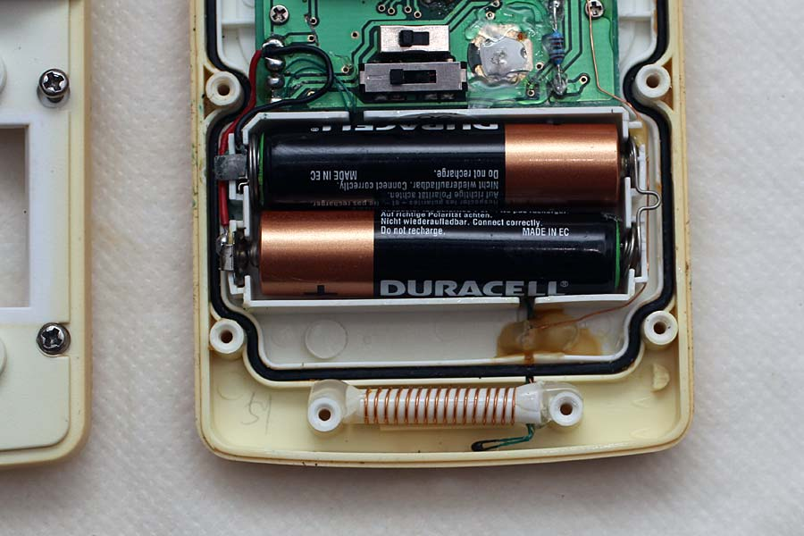
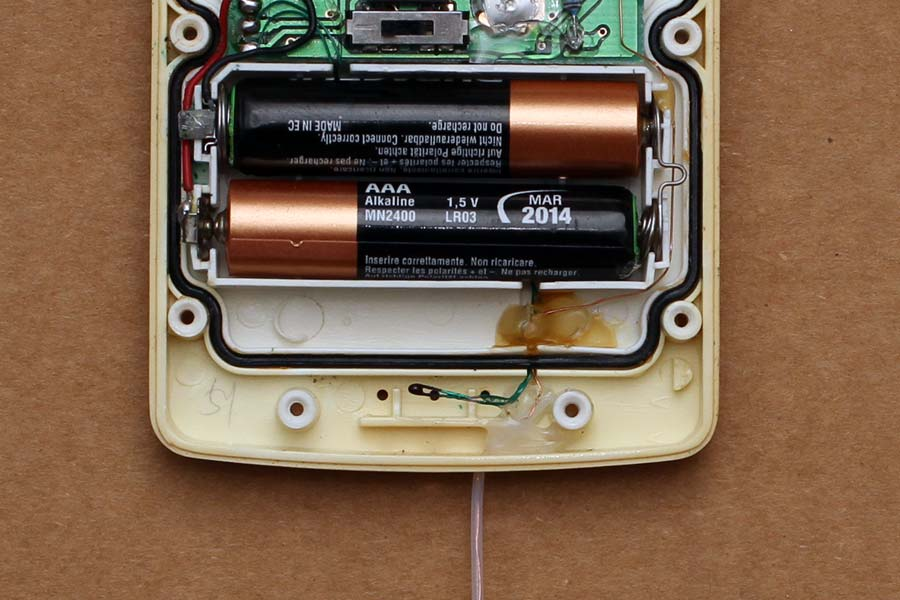
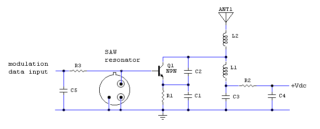
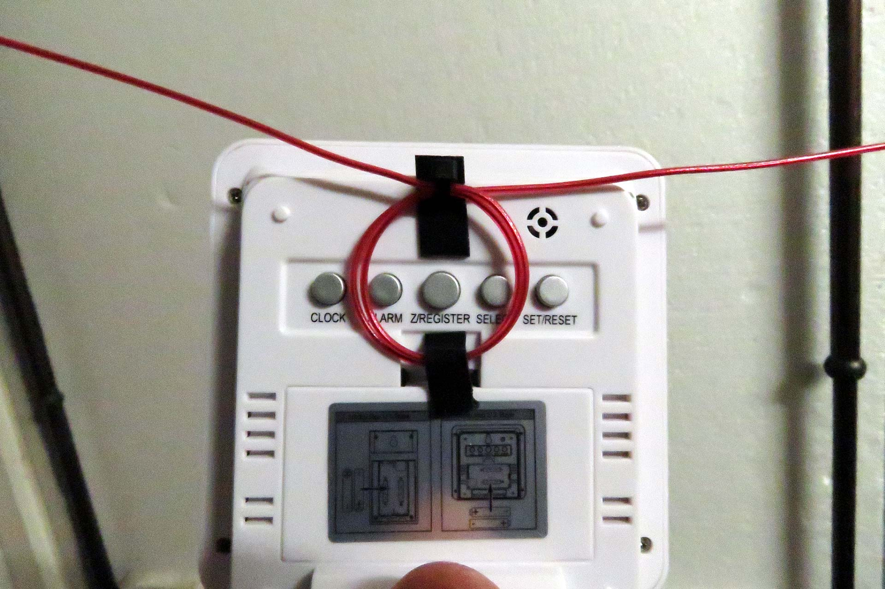
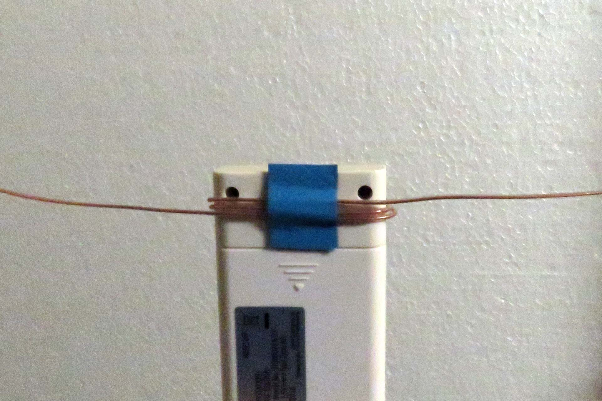

Radio & antenne
Sensori a 433 MHz
Semplice modifica per aumentare la portata.
Indice della pagina
Premessa
Settembre 2013/Gennaio 2020
Chi vuole usare un termometro digitale o una stazione meteo con la sonda wireless esterna sovente non riesce arrivare fuori casa per mancanza di segnale, mentre in spazio aperto arrivano anche a 30mt, il problema è la frequenza e la scarsa antenna montata sui sensori. Altro problema è dato dalla saturazione di segnali radio, in presenza di forti campi dovuti a WiFi o radio commerciali FM, i piccoli segnali a 433 MHz vengono penalizzati.
Altro problema che la maggior parte dei sensori usano quasi sempre lo stesso modulo 433 e 3 Ch in un contesto di condominio, o abitazioni vicine, spesso non bastano più, può succedere di leggere la temperatura della sonda del vicino...
Soluzione, basta migliorare la piccola antenna per aumentare la portata.
S ensore Oregon Scientific

Togliendo il coperchio posteriore si vede la bobina a spirale che ha la funzione di antenna, purtroppo il segnale in uscita viene in parte assorbito dalle batterie metalliche e dal sensore NTC posizionato proprio sotto la bobina. (connessioni queste viste come messa a massa del segnale). Inoltre non è una buona soluzione avere la bobina antenna con il filo che corre assieme al sensore, quasi tutta la RF viene annullata.
Con 433 MHz la lunghezza d'onda è di 70cm, teoricamente ogni ostacolo più vicino al trasmettitore può penalizzare l'efficienza di emissione.
Come pure il passaggio del cavo antenna di rame smaltato vicino al CS, penalizza il segnale, ci andrebbe un cavetto schermato coassiale.
Migliore soluzione sarebbe lasciare il NTC al suo posto ed uscire con l'antenna nella parte superiore della scatola, bisognerebbe sigillare bene per evitare ingresso acqua.
Modifica con uscita antenna dalla parte sensore.

Descrizione
Per semplificare e non avere problemi con la tenuta all'acqua, si è scelto di fare uscire il filo di antenna dalla parte inferiore.
La modifica è molto semplice, si stacca delicatamente la bobina e si svolge tutto il filo di rame smaltato, la lunghezza del filo è eccessiva per risuonare a 1/4 onda sui 433 MHz, dovremo accorciarlo a 17cm, in questo caso è stato usato un tubetto di teflon diam. 0.8 per protezione e antilacerazione.
Il cavo viene fatto uscire da uno dei fori per la misura della temperatura aria, il sensore NTC va posizionato in centro e fissato con un po’ di colla termica.
Il risultato è già molto buono, la portata fuori casa si è moltiplicata per 3 e anche la presenza di WiFi disturba poco. Si riescono facilmente superare i 3 piani dove prima si faceva a malapena un solo piano con l'antenna interna.
Attenzione che alcuni sensori usano la frequenza di 315 MHz quindi la lunghezza dell'antenna a 1/4 deve essere di 23cm. la frequenza di lavoro è scritta dietro al dispositivo o meglio sopra al SAW Resonator.
Questa modifica va bene un po’ per tutti i tipi di sensori remoti, pure quelli per Power Meter usano la stessa frequenza e gruppo RF con il SAW Resonator 433 MHz.
{kind=link}

Questo è lo schema generico della sezione RF dove la L2 rappresenta la bobina antenna interna che abbiamo eliminato mettendo il filo da 17cm.
Per chi vuole andare più lontano, la soluzione migliore sarebbe quella di adattare l'impedenza di uscita per i 52 Ohm e saldare un cavetto RG 174 collegato a connettore SMA per poi andare su una antenna seria, posizionata nel punto migliore, è pensabile di arrivare a 80-100 metri.....
Aggiungere i 17cm di antenna pure sul ricevitore può migliorare ancora la prestazione, bisognerebbe che il ricevitore fosse posizionato non appeso al muro, ma su un tavolo non metallico lontano dalle parti, così da avere più apertura in ricezione.
Meglio ancora aggiungere un piccolo amplificatore RF in classe "A" per portare il segnale dai 5-10mW a dei più sicuri 100-200mW......non ci sarebbe un grande consumo di batteria a 9V in quanto l'impulso trasmissione dati dura meno di 1 sec ogni 30 sec....
Soluzione semplice


Per chi non vuole aprire e saldare, propongo questa soluzione, meno efficace, ma che può dare qualche risultato, antenna a dipolo, accoppiata direttamente sul sensore, si tratta di avvolgere due spire di filo rigido e lasciare gli spezzoni come antenna, i baffi nel caso di 433 vanno lasciati lunghi 17cm, l'avvolgimento va posizionato dove sotto c'è l'antenna interna. Allontanando il trasmettitore si dovrebbe notare un mantenimeto del segnale.
© Roberto Chirio: all rights reserved.